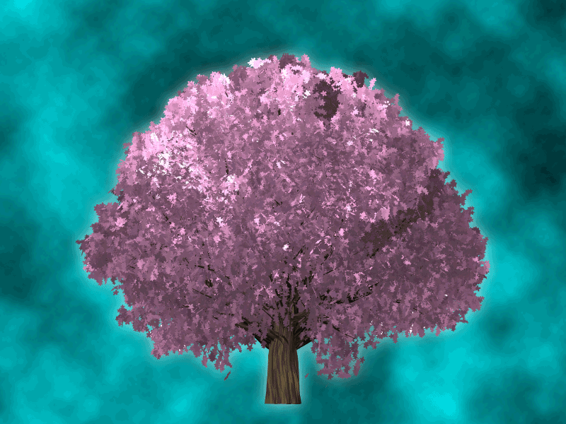

GIF's are useful as a result of their low file size, but have multiple downsides including a limitation to the amount of colors that can be used as well as not being able to show gradients well.
JPG's have the best quality and are the best for gradients and shadows, but lower quality can severly impact the picture.
PNG's again have a very limited number of colors to use, as well as having very large file sizes and not being supported by some major web browsers.
Oh and by the way, here's my animated tree:
